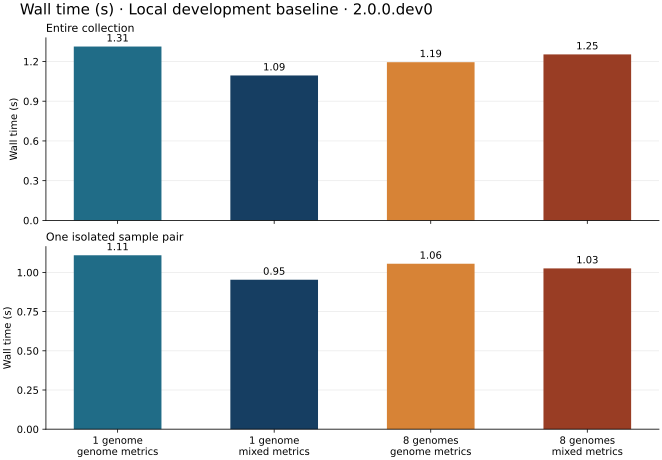
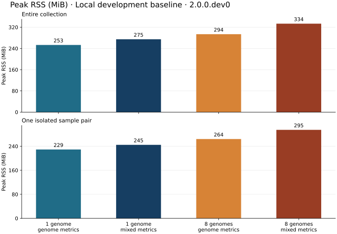
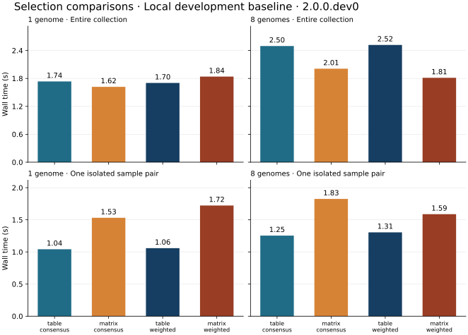
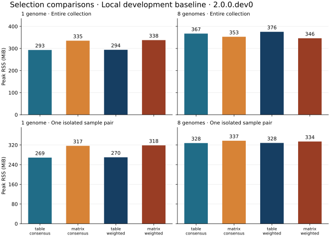

Release performance benchmarks
Local V2 development baseline. Published release measurements appear here as they become available.
Genome and gene ANI benchmarks


dN/dS and pN/pS benchmarks


Release measurements and runner details · Local baseline JSON
What the suite measures
| Fixture | Genomes | Bases per genome | Samples | Pairs per collection |
|---|---|---|---|---|
| Single genome | 1 | 120,000 | 4 | 6 |
| Multiple genomes | 8 | 30,000 | 4 | 6 |
The suite has 12 workloads. In each layout, two table runs measure genome ANI and longest identical stretch, with and without gene ANI. Four selection runs measure those three metrics plus all six selection columns, using table and matrix mode with either consensus or weighted integration.
The fixtures use synthetic position profiles with substitutions, coverage gaps, and overlapping genes. Selection fixtures add joint codon counts from two simulated haplotypes at roughly a quarter of the complete codons per sample. Both methods read the same position profiles and codon evidence. The benchmark checks that the exported collection tables agree, including the selection columns.
Each invocation starts a fresh process with two Polars threads and a fresh run
directory. Selection workloads use zipstrain compare for the full collection
and for each two-sample input. Matrix selection uses the NumPy backend, the
anchor kernel, and a 1 GB memory budget. Its measurements include building the
matrix and staging codons from the input profiles. The ANI and stretch workloads
measure individual pairs through zipstrain utilities compare-pair.
Wall time includes startup, validation, and Parquet output. Fixture generation and result checks run outside the timer. The OS may cache inputs between runs.
The charts show medians from three repetitions. Each collection point summarizes three runs. Each pair point summarizes 18 independently measured pair runs. Peak RSS is the high-water mark of resident memory reported by the operating system for the comparison process. The downloadable JSON retains all observations and records the platform, CPU, Python, Polars, NumPy, h5py, and runner image. GitHub runner hardware can vary between releases.
Running and publishing the benchmark
Run the suite against a checkout or against an installed V2 wheel on Linux or
macOS. Install the package dependencies and h5py for the NumPy matrix
workloads. Run from the repository root to benchmark the checkout.
PYTHONPATH=zipstrain/src python Scripts/benchmark_compare.py --output work/benchmark.json
python Scripts/plot_compare_benchmarks.py --output-dir work/benchmark-charts work/benchmark.json
Use --quick --repetitions 1 to check the workflow with smaller fixtures. Keep
quick runs and local measurements in separate charts from the release series.
The PyPI workflow runs the full suite against the wheel built for each release
tag. Publishing requires successful runs with valid output tables. After PyPI
publishing succeeds, the workflow archives the raw measurements and refreshes
the charts on the benchmark-results branch. The docs page reads the charts
from that branch and falls back to the bundled local baseline. Suite 2 adds the
selection workloads. If a fixture or measurement protocol changes, start a new
suite version so its results form a separate series.